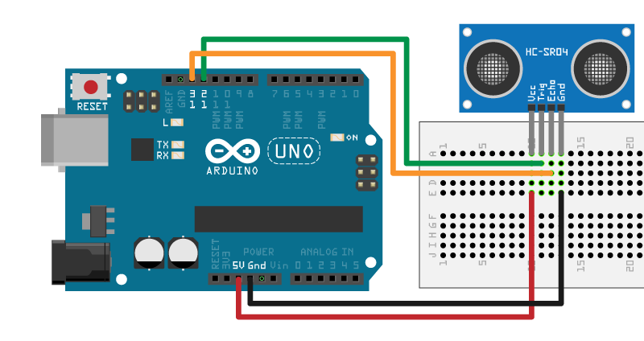

Control HC-SR04 Ultrasonic Sensor
This example shows how to use the MATLAB® Support Package for Arduino® Hardware to control a HC-SR04 ultrasonic ranging module capable of measuring distances in the 2cm to 400cm range.
Contents
Hardware Requirements
- Arduino board
- HC-SR04 ultrasonic sensor
Hardware Setup
- Connect Trig pin to pin D12 on Arduino board.
- Connect Echo pin to pin D13 on Arduino board.
- Connect VCC pin to 5V pin on Arduino board.
- Connect GND pin to GND pin on Arduino board.

Create HCSR04 Object
Create arduino object with JRodrigoTech/HCSR04 add-on.
a = arduino('COM38', 'Uno', 'Libraries', 'JRodrigoTech/HCSR04')
a =
arduino with properties:
Port: 'COM38'
Board: 'Uno'
AvailablePins: {'D2-D13', 'A0-A5'}
Libraries: {'JRodrigoTech/HCSR04'}
Create ultrasonic sensor object with trigger pin D12 and echo pin D13.
sensor = addon(a, 'JRodrigoTech/HCSR04', 'D12', 'D13')
sensor =
HCSR04 with properties:
Pins: 'D12'(Trigger), 'D13'(Echo)
Measure Sensed Distance in Meter
val = readDistance(sensor);
sprintf('Current distance is %.4f meters\n', val)
ans = Current distance is 0.0800 meters
Measure Distance from Sensed Time
The distance can be computed from the sensed time using this equation, distance = (time x speedOfSound) / 2. Assume speed of sound is 340m/s here.
t = readTravelTime(sensor);
sprintf('Current distance is %.4f meters\n', 340*t/2)
ans = Current distance is 0.0918 meters
Clean Up
clear sensor clear a